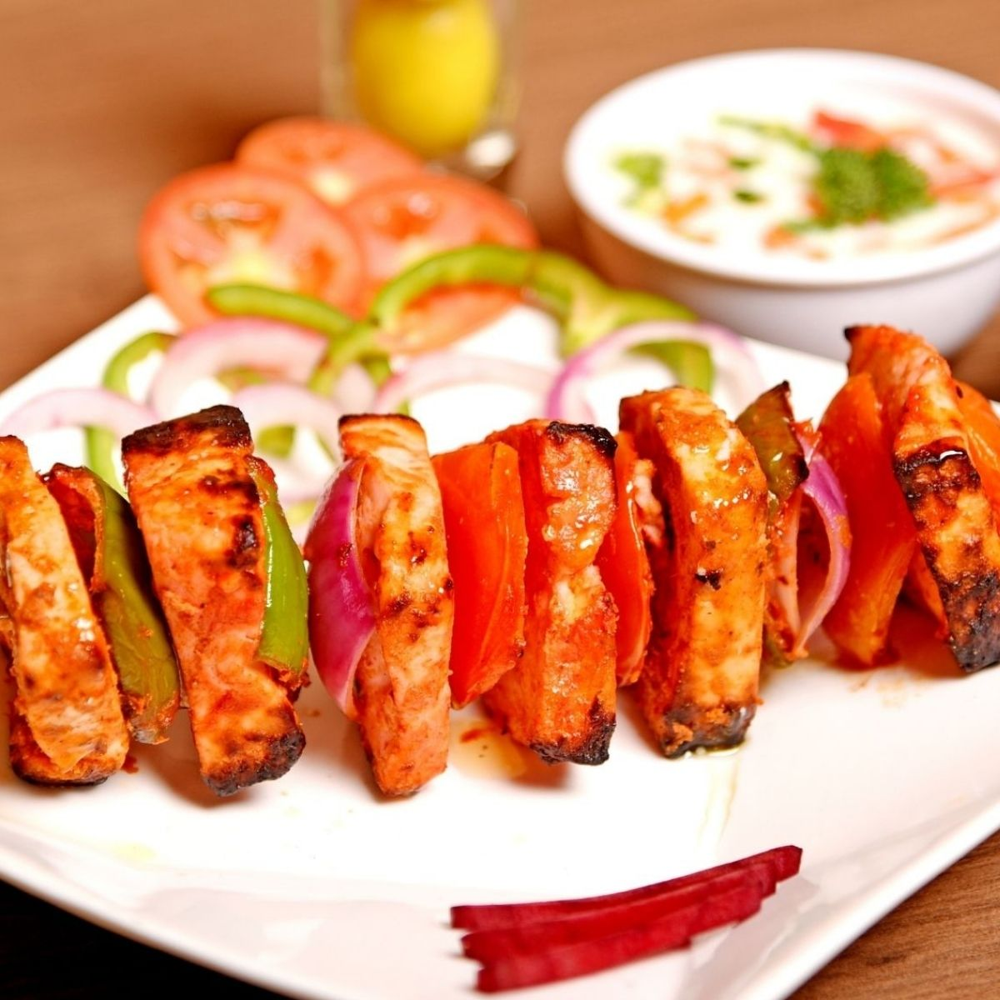

Paneer Tikka Recipe
Home
Paneer Tikka Recipe

Description
Paneer tikka is a popular North Indian appetizer featuring cubes of paneer (Indian cottage cheese)
marinated in a spiced yogurt mixture and grilled
or roasted to a smoky, charred perfection.
Ingredients
- Paneer 500 gm (cubes)
- Mustard oil 1 tbsp
- Kashmiri red chilli powder 1 tbsp
- Jeera powder 1 tsp
- Coriander powder 1 tbsp
- Black salt ½ tsp
- Amchur powder 1 tsp
- Garam masala 1 tsp
- Kasuri methi 1 tsp
- Ginger garlic paste 1 tbsp
- Roasted besan 1 tsp
- Salt & black pepper to taste
- Hung curd/thick curd ½ cup
- Fresh coriander 1 tbsp (chopped)
- Fresh mint leaves 1 tbsp (chopped)
- Capsicum ½ cup (diced)
- Onions ½ cup (petals, diced)
- Tomatoes ½ cup (diced & deseeded)
- Live charcoal + ghee
Steps
- In a mixing bowl, add mustard oil and Kashmiri red chilli powder, mix well to bleed the natural red colour, further add the remaining powdered spices, ginger garlic paste, roasted besan & salt & black pepper powder to taste, mix well and further add, freshly chopped coriander & mint leaves and hung curd, mix well further add diced onions, tomatoes and capsicum and paneer cubes, mix and marinate well but gently without breaking the paneer cubes.
- Smoke the marinated paneer, by placing a live charcoal and pouring few drops over it, keep it covered for at least 4-5 minutes to impart smoke flavour in it.
- Skew the paneer, onions, tomatoes and capsicum over a skewer.
- Cook and char the paneer on open flame, further, apply some melted butter over the charred paneer and cook them again briefly on open fire, you can also choose to grill them on pan by skewering it in either bamboo skewers or steel skewers